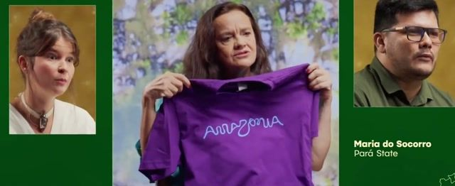
原片 00:41.00 · 局部裁切
G / 背景群体
画中画人物群体
多人影像被排入同一人物图卡系统；不根据排版或姓名位置推断亲属、职业或真实身份。插画人物另作为设计元素说明，不做人脸追踪。
用户指定分类：审美短片。重点参考 B 镜、包装设计和配色。素材实际以文旅品牌设计讲解与案例展示为主；本报告区分品牌案例画面、中文解说字幕与新作建议。
画面交代看到了什么，动作过程交代怎样发生。长镜头按镜内变化分段；没有新动作的镜头，也写清状态和作用。
真人只在产品手部与人物图卡中出现。主体分析聚焦图形、字形、材料和版面；人物群体不作身份识别。

原片 00:41.00 · 局部裁切
多人影像被排入同一人物图卡系统；不根据排版或姓名位置推断亲属、职业或真实身份。插画人物另作为设计元素说明，不做人脸追踪。
原片 00:35.60 · 局部裁切
不同产品图中的手部作为可见局部索引，不主张属于同一人。
| 人物／群体 | ||||||||||||||||||||||||||||||||||||||
|---|---|---|---|---|---|---|---|---|---|---|---|---|---|---|---|---|---|---|---|---|---|---|---|---|---|---|---|---|---|---|---|---|---|---|---|---|---|---|
| G · 画中画人物群体 | — | — | — | — | — | — | — | — | — | — | — | — | — | — | — | — | — | — | — | — | — | — | — | — | — | — | — | — | — | — | — | — | — | 主要 | — | — | — | — |
| H · 持包装的手部局部 | — | — | — | — | — | — | — | — | — | — | — | — | — | — | — | — | — | — | — | — | — | 主要 | — | — | — | 主要 | — | — | — | — | — | — | — | — | — | — | — | — |
图卡排版关系不等于现实人物关系。
每条分析附回看片段：先列画面与声音证据，再解释组织方式，最后给出可以放进自己作品的写法。
原片观察与听辨开头河道描线组成字标；8.2秒起显示河道档案；15.63秒起来源图与字形并置；35.53秒后字标落在多种产品上。
怎样起作用B镜承担“来源—提炼—延展—落地”的解释链。前后使用同一个曲线母题，让包装有内容依据。
写进自己的提示词为新文案选真实素材，先显示能被提炼的轮廓，再抽象为图形，最后给实际应用；找不到形状对应就直接换表达，不硬套。
原片观察与听辨河流/字形左右分屏、三联海报、产品中心标签、人物图卡与海报墙分别使用稳定容器。
怎样起作用空间关系主要由版式组织。局部变化保留锚点，减少每次切换重新寻找重点的成本。
写进自己的提示词先确定主图、辅助图、文字的固定区域；同一段只改变一类信息；实景上的大字避免盖住最关键地貌。
原片观察与听辨河道图与网页框的缩放属于展示层；地名风景是实景素材加图形；产品多镜以极短硬切连接。
怎样起作用本条更值得参考的是素材如何被呈现和组接，不能把每次版面缩放都解释为摄影机运动。
写进自己的提示词已有风景、产品、人像可以直接作为底素材；新制作集中在描线、框架、图文层级和匹配剪辑。
原片观察与听辨开头7.27秒建立方法；19.8–24.27秒让交互字形变化可读；35.53–37.37秒连续11个五帧产品镜头；40.03–49.07秒放慢给人物与标志交接。
怎样起作用密度变化由信息任务驱动。产品快切说明适配面广，不适合让观众逐张阅读小字。此结论基于画面和镜长，未确认音乐卡点。
写进自己的提示词解释镜给观众观察变化的时间；例证段短切；新片需要阅读标签时延长产品镜，不能机械照搬五帧。
原片观察与听辨字标从河道描线、单色字、彩色插画字到布标、纸牌和食品标签，轮廓语言反复出现。
怎样起作用统一来自重复的形状和组合关系，色彩与材料可以变化。人物表情不是本片主要叙事驱动。
写进自己的提示词锁定一个原创标志的曲线和组合间距；跨材质保留可读结构，复杂版本与单色版本成套设计。
原片观察与听辨产品五帧快切中组合字标大致落在中央；人物图组缩小后日落成为背景；53.3秒转入黑场，前一镜末段下方有额外字形残留。
怎样起作用几何连续能够连起不同材料与画面；源片技术残留不应成为复刻目标。
写进自己的提示词检查标志中心、尺度、基线、边距；切换底图时匹配这些锚点；最终输出逐帧看片尾，清掉多余图层。
原片观察与听辨约0–5.3秒先沿河道显线、拉出多张图、再退去底图；19.8–24.27秒固定界面里曲线变形；40秒后人物图卡增加并缩小，最后交给环境与标志。
怎样起作用动效把概念转换的中间步骤显示出来，帮助观众理解。实际缓动控制点和关键帧时长无法从展示视频确认。
写进自己的提示词分层为底素材、轮廓、主字、注释、装饰；每次只让承担解释的层先动，其余稍后或保持。自然轮廓与字形尽量共享路径节点。
原片观察与听辨源片实测有音轨，兼容预览保留混音；本次未实际听辨音乐。
怎样起作用不能从高饱和画面和快切推断曲风、BPM或鼓点位置。
写进自己的提示词画面提示词不添加音乐要求；后续需要声音时再单独试听并标注进出点。
原片观察与听辨中文烧录字幕可读，但没有用听辨确认旁白与字形变化、切镜之间的声音关系。
怎样起作用字幕、音轨存在和画面变化不能代替声音证据。
写进自己的提示词不把描线、切镜、按钮操作写成已确认存在对应音效；本次先交付视觉方法。
原片观察与听辨深绿和奶油黄贯穿标志页与结尾；红底浅黄、黄底蓝线、黄紫产品以及紫底浅黄是不同段落的独立色组。
怎样起作用统一靠重复主字和锚色；高饱和颜色在单个画面内分出主底、主字和点缀层级。
写进自己的提示词不要把所有亮色等面积铺满。先选一组主底与主字，再从插画取少量强调色；照片保留自然层次。色值为压缩成片近似采样，非官方品牌色。
原片观察与听辨河道对照解释字形依据，档案矩阵解释资料量，地名实景解释地域差异，快速包装组接解释应用广度。
怎样起作用这些画面可以接在相关旁白下，以可见关系替代抽象形容词。
写进自己的提示词需要解释“从哪里来”用描线对照；“多种选择”用网格；“同一系统多种应用”用中心匹配快切。只有色彩相似而信息不相干时，不作为对标。
河道轮廓生成字标，纯字切彩色自然插画。
档案网格、字形对照、交互变化逐步证明设计来源。
作者作品、海报、网页与地名实景连续展示。
简单字标页之后五帧快切，再回到多张主视觉总览。
人物图卡扩展、日落接管、语言变体与标志页结束。
B-ROLL / PACKAGING
每组绑定原片区间。原片观察与新作建议分开；是否适合取决于本次表达内容。
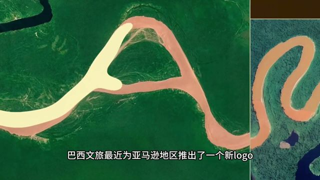
把素材中真实形状变成视觉符号，适合解释设计、灵感来源、地域特征。
卫星图中的粉褐色河道占据前景，奶油黄线沿河弯逐渐显露；画面缩小后露出多张河道图，轮廓共同组成 Amazonia 字样；图像底板退去，留下深绿底上的文字。
新作设计建议：先给真实纹理，再用路径遮罩描出轮廓，缩小拼成一个词；最后去掉底图，让观众看清提炼结果。
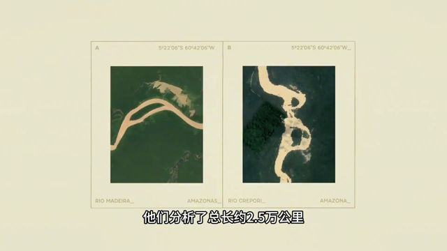
用从两三张卡片到密集矩阵的变化说明覆盖面与素材积累。
奶油纸色底上，两到三张直幅卫星图片并列；卡片周围有细线、字母和地名小标注，逐步展开更多样本。 河流卫星图片铺成密集矩阵，每格保留纸色边距与小字；整体取景继续缩小或平移，末段网格位置快速变化后切入红底字形。
新作设计建议：用统一卡片和小号编号展示素材来源；先展示少量大图，再展开证据集合。 新作设计建议：同一网格只控制整体尺度和位置，保持卡片边距；让数量增加承担“资料丰富”的解释任务。
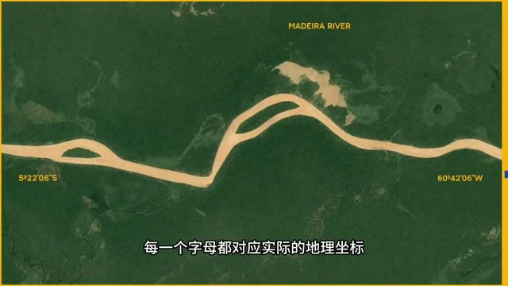
让观众同时看到原型和提炼结果，不必只听抽象描述。
左侧为 Madeira 河的卫星图，右侧为黄底蓝色轮廓；从地形全图转到左右分屏，河道与抽象 A 形建立对应。 左侧奶油色河流在深绿林地上分叉，右侧深青底上出现橙色竖向 B 形轮廓，两部分宽度接近。 左侧深色弯曲河道切入，右侧红底黑色线条模仿其转折；地名、字母及角落标注维持资料卡风格。
新作设计建议：先显示来源，再让纯色板占据一半，把提炼轮廓放在相同朝向和近似比例的位置。 新作设计建议：相同的竖向主干与弯折是匹配锚点；切换素材时同时更换与之对应的轮廓。 新作设计建议：用相同弯折方向连接真实素材和矢量线；为新内容重新描线，不直接套用不相关的轮廓。
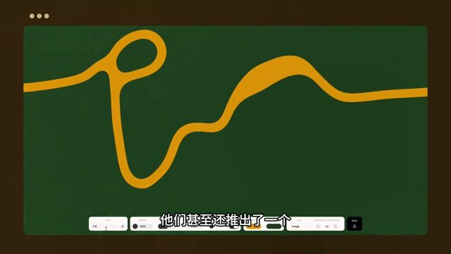
适合解释可变规则、个性化和“同一结构不同选择”。
纸色外框和棕色浏览器顶栏包住绿色画布；起始为黄色横线，随后形成 Pará，多个字形轮廓局部改变，下方工具条保持。
新作设计建议：以固定容器承载变化，先直线再成字，再做局部形变；界面控件只为说明功能，不需逐项仿制。
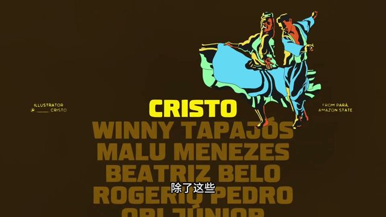
固定名单骨架，作者、底色与代表作成组切换。
棕底排着多行粗体艺术家姓名，CRISTO 被浅黄高亮，蓝绿衣装的舞蹈人物插画位于名字上方偏右。 背景换为深绿，WINNY TAPAJÓS 成为亮黄色重点；蝴蝶样纹饰与长条动物图案分置名单周围。 紫色背景上，多行姓名继续排列，MALU MENEZES 被黄色突出，一只红色鹦鹉插画位于文字上方。
新作设计建议：纵向名单里每次只亮一行，配一幅代表作品；其余姓名降亮度，给视线一个明确落点。 新作设计建议：固定名单布局，切换一组背景色与作者作品，形成系列而非重新设计每一页。 新作设计建议：在同一名单骨架里改变强调行和插画，让作者介绍形成可预测的视觉节奏。
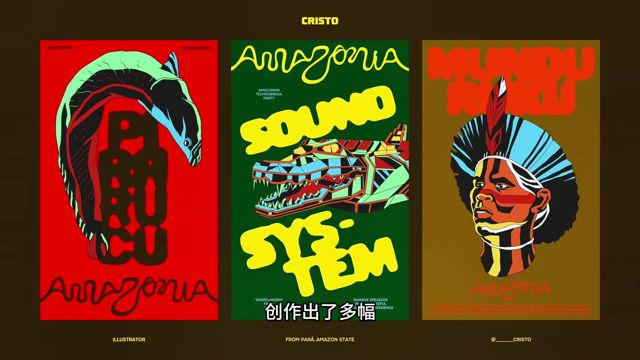
统一外层网格，内部允许鲜明色彩与不同主题。
棕底三张直幅海报并排：左侧红底鱼形与叠字，中间绿底船与黄色粗字，右侧暖棕底头像与大字；顶端标有 CRISTO。 左为黄绿底植物图，中央绿底粉色建筑，右为蓝底鱼形纹饰；顶部标有 WINNY TAPAJÓS，文字在图形间占据大块面积。 左蓝底粉色架高房屋，中央黄底紫色食物碗和粗体叠字，右紫底粉色植物果实；顶部可读 MALU MENEZES。
新作设计建议：用等宽三列展示同一系统的不同主题；各海报内部允许色彩变化，外层对齐保持一致。 新作设计建议：让植物、建筑、鱼各承担一张卡片主题；用同一字形标志连接不同插画风格。 新作设计建议：为多主题建立固定网格，强色对比集中在单张海报内部；跨卡片重复标题位置。
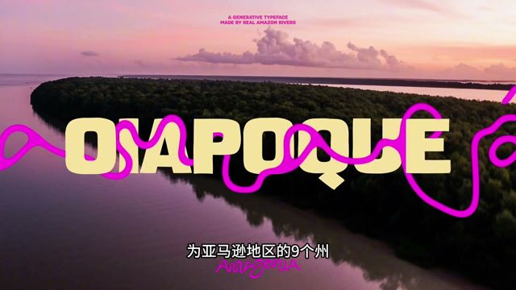
实景提供气氛，地名负责信息，曲线维持共同风格。
粉紫暮色下的河湾横向展开，浅黄粗体 OIAPOQUE 在中央，粉色流动手写线穿过文字与背景。 橙色夕阳在天际线上方，水面反光和黑色城市剪影构成背景；中央浅黄 BELÉM 与橙黄曲线叠加。 蓝天和桌状山体占据上半画面，草地在前景；浅黄 RORAIMA 粗字居中，红色曲线横穿词形。
新作设计建议：实景先承担气氛，粗体地名负责识别，细长有机线负责品牌连接；文字避开关键地景。 新作设计建议：以落日与建筑剪影作为明暗底板，奶油黄文字保持高对比，曲线颜色与夕阳呼应。 新作设计建议：选轮廓清晰的地景作底，重复同一粗体地名和手写曲线结构，只替换环境与强调色。
保留近似中心和组合字标，以材料变化显示广度；需要阅读时延长镜长。
深绿色底上，小号粗体 MADE OF 与较大的奶油黄 Amazonia 流动字居中叠排，大面积留白。 一只手握着浅黄饮料包装，中央橙色矩形标签写有 MADE OF Amazonia，暖光和手指构成真实材质对比。 紫黑色圆果铺在后方，黄底紫色图案的包装斜置在前；组合字标重复出现。 橙红针织纹理上缝着白色矩形布标，深绿 MADE OF Amazonia 位于中央，织物细节清晰。 模糊绿叶后景前挂着灰褐色异形吊牌，表面印有深色组合字标，上方连接一条带子。 浅绿包装袋占据画面，紫色图形和字标落在中部，边缘有锯齿封口，下面露出暖色手部或承托局部。 深绿色圆形吊牌垂挂在偏灰织物前，浅黄 MADE OF Amazonia 居中，悬绳从上方连接。 浅色织物上放着棕色牛皮纸吊牌，黑色细绳打结，白色组合字标位于标签上部。 棕纸包装上方是 A、B、C、D、E 彩色信息格，下方是黑色组合字标和小字信息，背景带浅粉暖调。 装有浅色块状食品的透明罐右侧可见，左侧棕纸围标印有紫色组合字标和营养信息，后景偏绿。 暖色虚化背景前是白色纸袋，黑色 MADE OF Amazonia 位于上方偏中位置，纸面亮部较柔和。 黄色织带横跨绿色织物，绿色 MADE OF Amazonia 印在织带中部，边缘缝线与弯曲带出真实体积。
新作设计建议：先用简单标志页给观众记忆位置，再进入不同材质上的应用；保证组合字标整体可读。 新作设计建议：保留原有产品素材，用平面跟踪让组合字标贴在包装标签区域；新片可延长至标签可读。 新作设计建议：标志保持近似中心位置，替换果实与包装底图；紫色环境与黄色标签形成成对对比。 新作设计建议：用织物凹凸、缝线和自然阴影说明标志落在实体上；保留平面透视与布面形变。 新作设计建议：以浅景深素材托住吊牌；替换字标时继承纸板肌理，不把字标做成发光悬浮物。 新作设计建议：平面图案跟随软包装褶皱；控制字标在快速组接中的视线位置。 新作设计建议：同一组合字标切换到圆形标签，留足安全边距，延续绿色作为品牌锚色。 新作设计建议：让白字跟随纸牌透视，保留纸纤维和细绳投影；借材质变化展示系统适配性。 新作设计建议：把品牌标志与功能信息分层：上方表格、下方标志，不让手写轮廓侵入重要数据。 新作设计建议：沿瓶身弧面做标签贴合，保留透明容器折射；保持组合字标作为跨产品的识别点。 新作设计建议：同一字标用单色黑印在浅色材料上，检验小尺寸和低成本印刷的可读性。 新作设计建议：字标随织带弯曲和光照变化；不要让字号变小到只剩装饰线。
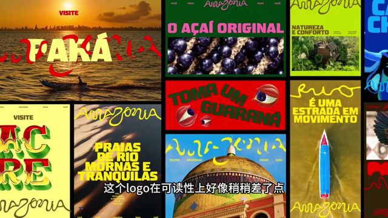
将前面分开看的成果重新组织成满幅矩形墙。
旅游实景、巴西莓、红色眼睛、黄色文案、植物和交通工具海报组成不等大的矩形拼贴；多张海报内部仍有局部变化。
新作设计建议：将既有单张主视觉重新排成总览墙；固定分隔关系，局部轮换，避免全画面同时乱动。
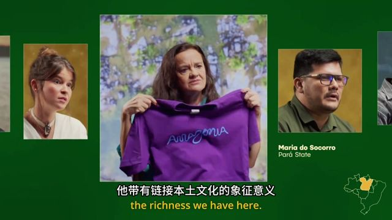
用图卡扩展、整体退远和后景接管连接人物、环境与品牌概念。
绿色底上三张人物图卡并置，中间长发人物举紫色衣服，左为浅衣人物，右为眼镜人物；更多人像加入并整体缩小，地名标注展开；随后日落河面占据背景，人物图组退去，奶油黄标志显露，最后过渡回绿色底。
新作设计建议：先让一个代表人物占大图，再扩成群体；群体退远后用环境接管画面，最后只保留标志完成收束。
COLOR REFERENCES
色值来自压缩成片的代表像素或视觉近似，受画面压缩与显示影响，不是官方品牌色。面积比例是新作设计建议，不是原片精确统计。
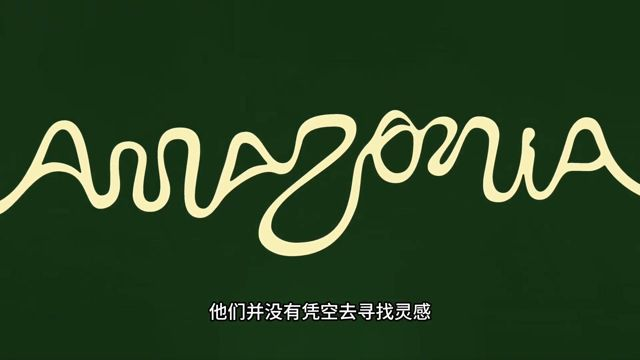
绿色底面积最大，奶油黄只用于标志与少量信息。
新作建议比例
新作建议：深绿约80%，浅黄约15%，其余约5%留给小字和低对比纹理。
B镜用法
适合概念成立后的停读页、地域片头、成果收束。
制作提示词
用深绿大色面承载原创奶油黄流动字；先让字形显露，再保持，避免加入无关闪光。
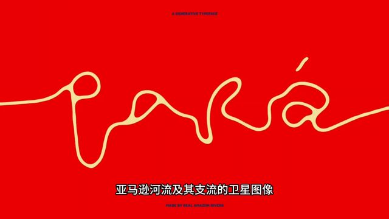
鲜红底与浅黄曲线形成强烈前后关系，小注释退到边缘。
新作建议比例
新作建议：红底约85%，浅黄曲线约12%，注释约3%。
B镜用法
适合突出一个关键词、展示提炼后的图形，作为短促强调页。
制作提示词
红色底只放一个浅黄色主词；横向基线固定，笔画保持圆润连续，先完成轮廓再停读。
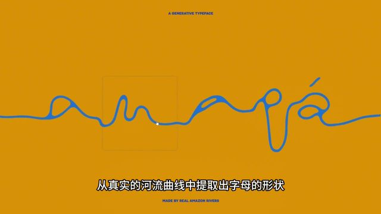
暖黄底上以相对冷的蓝色线条表现词形，细控制框存在感较弱。
新作建议比例
新作建议：暖黄约88%，蓝线约10%，辅助框与小字约2%。
B镜用法
适合解释路径、形状、可变规则；需要更强阅读时加粗线条。
制作提示词
暖黄平面上展示原创蓝色有机线字，固定基线，仅局部轮廓变化；辅助框只在解释时出现。
前景标签明亮，紫字与紫黑色果实形成关联；不是把整张照片统一涂成黄紫色。
新作建议比例
新作建议：产品图保留自然明暗；图形区黄橙约65%、紫约30%、其余约5%。
B镜用法
适合食品、材料、产地或产品系列的应用展示。
制作提示词
使用真实产品底图，黄橙色标签配紫色原创标志；文字随标签透视，保留果实纹理、暗部和自然高光。
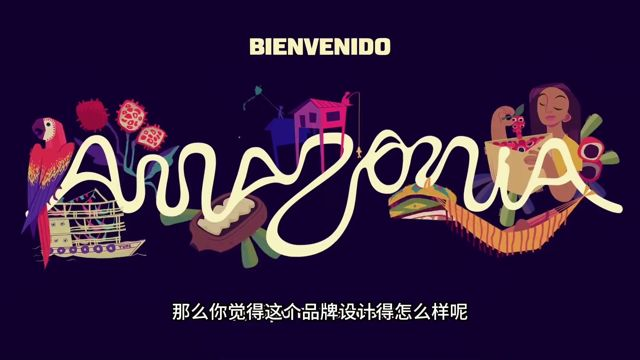
深紫背景让浅色流动字跳出，多色插画围绕主字分布。
新作建议比例
新作建议：深紫约70%，奶油黄约15%，插画色合计约15%；主字留出完整轮廓。
B镜用法
适合文化主题片头、地方元素拼贴、系列欢迎页。
制作提示词
深紫大底上排原创浅黄流动字；粉色与其他插画色只放在周围主题元素中，让主字先可读，再显现细节。
每几秒写明景别、机位、运镜、动作和结束状态。长镜头展开内部变化，切镜保留准确时间点。
45 个拍摄时间窗对应原片 38 个镜头。时间轴覆盖源片全部53.467秒；镜内图层变化不冒充硬切；精确路径与缓动曲线为待工程实现的设计选择。
镜头：图文展示取景与相对位置：起初是河道局部；合成画面缩放拉出整组图像，随后背景淡化。没有足够证据将其记为真实航拍拉升。 新作按既有底素材构图；数值焦段与机位不作源片事实。
动作：沿真实河道用浅黄路径遮罩逐渐显线，底图缩小，补入邻接图卡。
结束／衔接：停在该阶段已成立的图文关系，保持共同标志轮廓和视线中心；下一窗按标注继续或切换。
镜头：图文展示取景与相对位置：起初是河道局部；合成画面缩放拉出整组图像，随后背景淡化。没有足够证据将其记为真实航拍拉升。 新作按既有底素材构图；数值焦段与机位不作源片事实。
动作：把多张素材与路径轮廓拼成完整标志，保留细小来源线。
结束／衔接：停在该阶段已成立的图文关系，保持共同标志轮廓和视线中心；下一窗按标注继续或切换。
镜头：图文展示取景与相对位置：起初是河道局部；合成画面缩放拉出整组图像，随后背景淡化。没有足够证据将其记为真实航拍拉升。 新作按既有底素材构图；数值焦段与机位不作源片事实。
动作：底图与来源注释逐渐淡去，浅黄字标在深绿底停住。
结束／衔接：停在该阶段已成立的图文关系，保持共同标志轮廓和视线中心；下一窗按标注继续或切换。
镜头：图文展示取景与相对位置：构图横向居中，图层有轻微显现和尺度变化；表现的是图形展示，不判断为相机环绕。 新作按既有底素材构图；数值焦段与机位不作源片事实。
动作：新作设计建议：字保持第一层级，地方性插画放在字后与空隙中，先保证主轮廓可读，再增加装饰密度。
结束／衔接：停在该阶段已成立的图文关系，保持共同标志轮廓和视线中心；下一窗按标注继续或切换。
镜头：图文展示取景与相对位置：版面正视，图片卡片的显现与横向扩展推动信息增加。 新作按既有底素材构图；数值焦段与机位不作源片事实。
动作：新作设计建议：用统一卡片和小号编号展示素材来源；先展示少量大图，再展开证据集合。
结束／衔接：停在该阶段已成立的图文关系，保持共同标志轮廓和视线中心；下一窗按标注继续或切换。
镜头：图文展示取景与相对位置：主要变化来自整张网格的合成缩放和位移；11.967 秒附近仍是同类网格的快速运动，合并为同一展示段。 新作按既有底素材构图；数值焦段与机位不作源片事实。
动作：新作设计建议：同一网格只控制整体尺度和位置，保持卡片边距；让数量增加承担“资料丰富”的解释任务。
结束／衔接：停在该阶段已成立的图文关系，保持共同标志轮廓和视线中心；下一窗按标注继续或切换。
镜头：图文展示取景与相对位置：正视图形画面，主体字形横向铺满，笔画呈有机弯曲。 新作按既有底素材构图；数值焦段与机位不作源片事实。
动作：新作设计建议：用一个大色面托一条高对比曲线，围绕同一基线设计字形，给主文字留足停读时间。
结束／衔接：停在该阶段已成立的图文关系，保持共同标志轮廓和视线中心；下一窗按标注继续或切换。
镜头：图文展示取景与相对位置：图形版面保持正视；变化集中于字形轮廓和细框，无法从画面确定原软件与插值算法。 新作按既有底素材构图；数值焦段与机位不作源片事实。
动作：新作设计建议：保持字形基线，改变单个字符轮廓；用低存在感的控制框解释“可调节”，避免把界面做成装饰。
结束／衔接：停在该阶段已成立的图文关系，保持共同标志轮廓和视线中心；下一窗按标注继续或切换。
镜头：图文展示取景与相对位置：分屏边界向中间移动，抽象字形在右侧显露；属于版面变化。 新作按既有底素材构图；数值焦段与机位不作源片事实。
动作：新作设计建议：先显示来源，再让纯色板占据一半，把提炼轮廓放在相同朝向和近似比例的位置。
结束／衔接：停在该阶段已成立的图文关系，保持共同标志轮廓和视线中心；下一窗按标注继续或切换。
镜头：图文展示取景与相对位置：正视左右分屏，河道与字形的纵向走势互相对照。 新作按既有底素材构图；数值焦段与机位不作源片事实。
动作：新作设计建议：相同的竖向主干与弯折是匹配锚点；切换素材时同时更换与之对应的轮廓。
结束／衔接：停在该阶段已成立的图文关系，保持共同标志轮廓和视线中心；下一窗按标注继续或切换。
镜头：图文展示取景与相对位置：构图保持左右二分；镜头切换源图和图形，不制造河流真实变形的说法。 新作按既有底素材构图；数值焦段与机位不作源片事实。
动作：新作设计建议：用相同弯折方向连接真实素材和矢量线；为新内容重新描线，不直接套用不相关的轮廓。
结束／衔接：停在该阶段已成立的图文关系，保持共同标志轮廓和视线中心；下一窗按标注继续或切换。
镜头：图文展示取景与相对位置：外框基本固定，内部曲线和选择框变化；不把它写成整片实机推拉。 新作按既有底素材构图；数值焦段与机位不作源片事实。
动作：固定界面，黄色横线局部弯起，逐步形成原创词形。
结束／衔接：停在该阶段已成立的图文关系，保持共同标志轮廓和视线中心；下一窗按标注继续或切换。
镜头：图文展示取景与相对位置：外框基本固定，内部曲线和选择框变化；不把它写成整片实机推拉。 新作按既有底素材构图；数值焦段与机位不作源片事实。
动作：外框和工具条保持，按字符控制局部轮廓变化，保持基线。
结束／衔接：停在该阶段已成立的图文关系，保持共同标志轮廓和视线中心；下一窗按标注继续或切换。
镜头：图文展示取景与相对位置：整页图形版面静稳，层级由高亮姓名和人物插画建立。 新作按既有底素材构图；数值焦段与机位不作源片事实。
动作：新作设计建议：纵向名单里每次只亮一行，配一幅代表作品；其余姓名降亮度，给视线一个明确落点。
结束／衔接：停在该阶段已成立的图文关系，保持共同标志轮廓和视线中心；下一窗按标注继续或切换。
镜头：图文展示取景与相对位置：沿用上一镜名单尺度，硬切更换底色、重点名字与作品。 新作按既有底素材构图；数值焦段与机位不作源片事实。
动作：新作设计建议：固定名单布局，切换一组背景色与作者作品，形成系列而非重新设计每一页。
结束／衔接：停在该阶段已成立的图文关系，保持共同标志轮廓和视线中心；下一窗按标注继续或切换。
镜头：图文展示取景与相对位置：固定正视版面；高亮对象与作品变化，人物姓名只作为画面文字记录。 新作按既有底素材构图；数值焦段与机位不作源片事实。
动作：新作设计建议：在同一名单骨架里改变强调行和插画，让作者介绍形成可预测的视觉节奏。
结束／衔接：停在该阶段已成立的图文关系，保持共同标志轮廓和视线中心；下一窗按标注继续或切换。
镜头：图文展示取景与相对位置：三列容器固定，画内图形与文字有版本变化。 新作按既有底素材构图；数值焦段与机位不作源片事实。
动作：新作设计建议：用等宽三列展示同一系统的不同主题；各海报内部允许色彩变化，外层对齐保持一致。
结束／衔接：停在该阶段已成立的图文关系，保持共同标志轮廓和视线中心；下一窗按标注继续或切换。
镜头：图文展示取景与相对位置：正视三列版面保持，局部文字逐渐补齐或替换。 新作按既有底素材构图；数值焦段与机位不作源片事实。
动作：新作设计建议：让植物、建筑、鱼各承担一张卡片主题；用同一字形标志连接不同插画风格。
结束／衔接：停在该阶段已成立的图文关系，保持共同标志轮廓和视线中心；下一窗按标注继续或切换。
镜头：图文展示取景与相对位置：固定三列版面，视觉重心随中间大字和右侧植物转移。 新作按既有底素材构图；数值焦段与机位不作源片事实。
动作：新作设计建议：为多主题建立固定网格，强色对比集中在单张海报内部；跨卡片重复标题位置。
结束／衔接：停在该阶段已成立的图文关系，保持共同标志轮廓和视线中心；下一窗按标注继续或切换。
镜头：图文展示取景与相对位置：外框保持，主体主视觉有轻微尺度变化；这是网站展示画面。 新作按既有底素材构图；数值焦段与机位不作源片事实。
动作：新作设计建议：给主视觉加一层轻量网页容器，展示它的应用场景；导航弱化，避免抢主视觉。
结束／衔接：停在该阶段已成立的图文关系，保持共同标志轮廓和视线中心；下一窗按标注继续或切换。
镜头：图文展示取景与相对位置：背景是风景素材，文字与曲线是叠加层；合成与实拍各自运动未完全分离。 新作按既有底素材构图；数值焦段与机位不作源片事实。
动作：新作设计建议：实景先承担气氛，粗体地名负责识别，细长有机线负责品牌连接；文字避开关键地景。
结束／衔接：停在该阶段已成立的图文关系，保持共同标志轮廓和视线中心；下一窗按标注继续或切换。
镜头：图文展示取景与相对位置：宽景取景，地名与装饰线横向保持；不据此推断具体航拍路线。 新作按既有底素材构图；数值焦段与机位不作源片事实。
动作：新作设计建议：以落日与建筑剪影作为明暗底板，奶油黄文字保持高对比，曲线颜色与夕阳呼应。
结束／衔接：停在该阶段已成立的图文关系，保持共同标志轮廓和视线中心；下一窗按标注继续或切换。
镜头：图文展示取景与相对位置：正面宽幅景观与二维字层叠加；背景取景变化较小。 新作按既有底素材构图；数值焦段与机位不作源片事实。
动作：新作设计建议：选轮廓清晰的地景作底，重复同一粗体地名和手写曲线结构，只替换环境与强调色。
结束／衔接：停在该阶段已成立的图文关系，保持共同标志轮廓和视线中心；下一窗按标注继续或切换。
镜头：图文展示取景与相对位置：纯图卡，标志尺度稳定，作为快速产品展示前的视觉锚点。 新作按既有底素材构图；数值焦段与机位不作源片事实。
动作：新作设计建议：先用简单标志页给观众记忆位置，再进入不同材质上的应用；保证组合字标整体可读。
结束／衔接：停在该阶段已成立的图文关系，保持共同标志轮廓和视线中心；下一窗按标注继续或切换。
镜头：图文展示取景与相对位置：近距离产品取景；该镜仅五帧，无法确认独立相机运动。 新作按既有底素材构图；数值焦段与机位不作源片事实。
动作：新作设计建议：保留原有产品素材，用平面跟踪让组合字标贴在包装标签区域；新片可延长至标签可读。
结束／衔接：停在该阶段已成立的图文关系，保持共同标志轮廓和视线中心；下一窗按标注继续或切换。
镜头：图文展示取景与相对位置：产品特写，硬切更换材质与配色，短镜强调对比。 新作按既有底素材构图；数值焦段与机位不作源片事实。
动作：新作设计建议：标志保持近似中心位置，替换果实与包装底图；紫色环境与黄色标签形成成对对比。
结束／衔接：停在该阶段已成立的图文关系，保持共同标志轮廓和视线中心；下一窗按标注继续或切换。
镜头：图文展示取景与相对位置：近景固定展示，切镜制造材质变化。 新作按既有底素材构图；数值焦段与机位不作源片事实。
动作：新作设计建议：用织物凹凸、缝线和自然阴影说明标志落在实体上；保留平面透视与布面形变。
结束／衔接：停在该阶段已成立的图文关系，保持共同标志轮廓和视线中心；下一窗按标注继续或切换。
镜头：图文展示取景与相对位置：产品近景，吊牌与虚化植物形成前后景；运动幅度在五帧内难以判断。 新作按既有底素材构图；数值焦段与机位不作源片事实。
动作：新作设计建议：以浅景深素材托住吊牌；替换字标时继承纸板肌理，不把字标做成发光悬浮物。
结束／衔接：停在该阶段已成立的图文关系，保持共同标志轮廓和视线中心；下一窗按标注继续或切换。
镜头：图文展示取景与相对位置：极短产品特写；无法据局部证明持物者身份，记录为手部局部群体。 新作按既有底素材构图；数值焦段与机位不作源片事实。
动作：新作设计建议：平面图案跟随软包装褶皱；控制字标在快速组接中的视线位置。
结束／衔接：停在该阶段已成立的图文关系，保持共同标志轮廓和视线中心；下一窗按标注继续或切换。
镜头：图文展示取景与相对位置：产品近景固定；色彩从前镜浅绿紫回到深绿浅黄。 新作按既有底素材构图；数值焦段与机位不作源片事实。
动作：新作设计建议：同一组合字标切换到圆形标签，留足安全边距，延续绿色作为品牌锚色。
结束／衔接：停在该阶段已成立的图文关系，保持共同标志轮廓和视线中心；下一窗按标注继续或切换。
镜头：图文展示取景与相对位置：近景材质展示，光线柔和，切镜而非纸牌现场变形。 新作按既有底素材构图；数值焦段与机位不作源片事实。
动作：新作设计建议：让白字跟随纸牌透视，保留纸纤维和细绳投影；借材质变化展示系统适配性。
结束／衔接：停在该阶段已成立的图文关系，保持共同标志轮廓和视线中心；下一窗按标注继续或切换。
镜头：图文展示取景与相对位置：纸袋表面特写；相对上一镜硬切，信息密度增加。 新作按既有底素材构图；数值焦段与机位不作源片事实。
动作：新作设计建议：把品牌标志与功能信息分层：上方表格、下方标志，不让手写轮廓侵入重要数据。
结束／衔接：停在该阶段已成立的图文关系，保持共同标志轮廓和视线中心；下一窗按标注继续或切换。
镜头：图文展示取景与相对位置：近距离产品构图，透明与纸质材质并列。 新作按既有底素材构图；数值焦段与机位不作源片事实。
动作：新作设计建议：沿瓶身弧面做标签贴合，保留透明容器折射；保持组合字标作为跨产品的识别点。
结束／衔接：停在该阶段已成立的图文关系，保持共同标志轮廓和视线中心；下一窗按标注继续或切换。
镜头：图文展示取景与相对位置：静态产品近景，字标与纸袋占主要视野。 新作按既有底素材构图；数值焦段与机位不作源片事实。
动作：新作设计建议：同一字标用单色黑印在浅色材料上，检验小尺寸和低成本印刷的可读性。
结束／衔接：停在该阶段已成立的图文关系，保持共同标志轮廓和视线中心；下一窗按标注继续或切换。
镜头：图文展示取景与相对位置：特写突出织带弧度与缝线，五帧短镜后进入海报总览。 新作按既有底素材构图；数值焦段与机位不作源片事实。
动作：新作设计建议：字标随织带弯曲和光照变化；不要让字号变小到只剩装饰线。
结束／衔接：停在该阶段已成立的图文关系，保持共同标志轮廓和视线中心；下一窗按标注继续或切换。
镜头：图文展示取景与相对位置：整体网格基本保持，多个小窗口出现文字或画面更新。 新作按既有底素材构图；数值焦段与机位不作源片事实。
动作：新作设计建议：将既有单张主视觉重新排成总览墙；固定分隔关系，局部轮换，避免全画面同时乱动。
结束／衔接：停在该阶段已成立的图文关系，保持共同标志轮廓和视线中心；下一窗按标注继续或切换。
镜头：图文展示取景与相对位置：人物是画中画素材，外层版面缩放与位置变化承担调度；约45.5秒起风景替换背景，约46秒图层交接到标志。无法由截图确定人物关系。 新作按既有底素材构图；数值焦段与机位不作源片事实。
动作：固定绿色底；中央主图较大，左右小图辅助，使用现有人物素材。
结束／衔接：停在该阶段已成立的图文关系，保持共同标志轮廓和视线中心；下一窗按标注继续或切换。
镜头：图文展示取景与相对位置：人物是画中画素材，外层版面缩放与位置变化承担调度；约45.5秒起风景替换背景，约46秒图层交接到标志。无法由截图确定人物关系。 新作按既有底素材构图；数值焦段与机位不作源片事实。
动作：新增人像图卡与对应地名，整组缩小，让个体构成群体。
结束／衔接：停在该阶段已成立的图文关系，保持共同标志轮廓和视线中心；下一窗按标注继续或切换。
镜头：图文展示取景与相对位置：人物是画中画素材，外层版面缩放与位置变化承担调度；约45.5秒起风景替换背景，约46秒图层交接到标志。无法由截图确定人物关系。 新作按既有底素材构图；数值焦段与机位不作源片事实。
动作：用日落环境替换后景，人像组继续退远，避免在前景拥挤。
结束／衔接：停在该阶段已成立的图文关系，保持共同标志轮廓和视线中心；下一窗按标注继续或切换。
镜头：图文展示取景与相对位置：人物是画中画素材，外层版面缩放与位置变化承担调度；约45.5秒起风景替换背景，约46秒图层交接到标志。无法由截图确定人物关系。 新作按既有底素材构图；数值焦段与机位不作源片事实。
动作：人像图卡和注释退场，原创奶油黄字标在日落中显露并停读。
结束／衔接：停在该阶段已成立的图文关系，保持共同标志轮廓和视线中心；下一窗按标注继续或切换。
镜头：图文展示取景与相对位置：人物是画中画素材，外层版面缩放与位置变化承担调度；约45.5秒起风景替换背景，约46秒图层交接到标志。无法由截图确定人物关系。 新作按既有底素材构图；数值焦段与机位不作源片事实。
动作：把日落逐渐过渡成绿色底，标志保持同一中心，准备接欢迎页。
结束／衔接：停在该阶段已成立的图文关系，保持共同标志轮廓和视线中心；下一窗按标注继续或切换。
镜头：图文展示取景与相对位置：二维主视觉正视展示，硬切换底色和插画组合。 新作按既有底素材构图；数值焦段与机位不作源片事实。
动作：新作设计建议：大黄底上用粉色线字作主角，绿色植物作为次要补色；欢迎语用较小粗体居中。
结束／衔接：停在该阶段已成立的图文关系，保持共同标志轮廓和视线中心；下一窗按标注继续或切换。
镜头：图文展示取景与相对位置：固定横向主视觉，靠色彩与插画变体形成系列变化。 新作按既有底素材构图；数值焦段与机位不作源片事实。
动作：新作设计建议：深底托浅色主字，多色细节放在周边，控制插画不要遮住关键字形弯折。
结束／衔接：停在该阶段已成立的图文关系，保持共同标志轮廓和视线中心；下一窗按标注继续或切换。
镜头：图文展示取景与相对位置：横向主视觉保持，细节有显现变化；末尾残留属于源素材，不当作新设计要求。 新作按既有底素材构图；数值焦段与机位不作源片事实。
动作：新作设计建议：回到绿色主底和奶油黄主字收尾，装饰围绕字形而不覆盖；新作在干净标志状态停住，移除残留图层。
结束／衔接：停在该阶段已成立的图文关系，保持共同标志轮廓和视线中心；下一窗按标注继续或切换。
镜头：图文展示取景与相对位置：无景别、无相机运动；黑场为实际源片尾。 新作按既有底素材构图；数值焦段与机位不作源片事实。
动作：新作设计建议：新剪辑可保留短黑场，或在干净标志页结束；不添加无依据的新动作。
结束／衔接：全黑，结束。
时间与切点由脚本测量，人物和动作由画面复核。结构检查与视觉判断分别记录。
镜头密度 42.6 镜／分钟。景别按主导标注、按时长统计；镜内变化在逐镜档案单独说明。
实测源文件SHA256与53.466667秒时间轴；查看全部镜头a/b帧、0–53秒每0.5秒源PTS采样；17.567–26.8秒和35.5–37.4秒疑点补源帧；开头5.1–5.7秒确认退底是镜内变化。Chrome内嵌原片静音连续播放至片尾53.47秒并显示S38，配色时间跳转到S06的13.50秒；声音未听辨。
时间轴与数据检查和视觉判断分别记录。通过结构检查不代表动作已逐帧确认。
Fredtalk Shots bundle validation ✓ metadata: 通过 ✓ timeline: 通过 ✓ cut provenance: 通过 ✓ taxonomy and ids: 通过 ✓ cast and categories: 通过 ✓ frame descriptions: 通过 ✓ rhythm: 通过 ✓ measurement track: 通过 ✓ measured motion: 通过 ✓ frame images and timestamps: 通过 ⚠ engine: S22: 固定机位标注的画面差分较高；复核稳定背景与主体运动。 ⚠ engine: S25: 固定机位标注的画面差分较高；复核稳定背景与主体运动。 ⚠ engine: S28: 固定机位标注的画面差分较高；复核稳定背景与主体运动。 ⚠ engine: S31: 固定机位标注的画面差分较高；复核稳定背景与主体运动。 ⚠ engine: S38: 固定机位标注的画面差分较高；复核稳定背景与主体运动。 ✓ Extended report inputs passed Machine checks cover measured source data, local assets, report structure and prompt timing. They do not verify visual identity, action interpretation, sound understanding or continuous playback; visual review is still required.